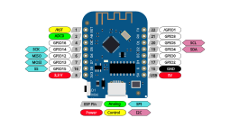
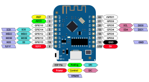

The Things (Network) Stack v3

Ich berichtete vor einiger Zeit über meine ersten Versuche der Beschäftigung mit LoRaWAN und The Things Netzwork.
Damals berichtete ich ebenfalls bvereits darüber, dass ich einer Anleitung im Netz folgend ein einfaches LoRaWAN Gateway - eigentlich nur einen Packet Forwarder auf Basis eines Raspberry Pi und eines RFM95 Moduls gebaut hatte.
Meine Experimente mit dieser Technologie schliefen hinterher wieder ein, weil ich - nachdem nachgewiesen war, dass das praktisch funktionierte - diesen Forwarder gerne auf dem Pi betreiben wollte, der bereits meine Atomuhr und den eigenen DNS-Resolver beherbergte. Aus mir unverständlichen Gründen wollte das damals nicht klappen - die einzige Meldung war, dass die Software den Transmitter nicht erkannt hat. Nachdem ich das Problem dann aus Frust erst einmal in den Schrank verbannt hatte und mich anderen Dingen zuwandte, hatte ich mir in meinem diesjährigen Urlaub vorgenommen, dieses Rätsel mit frischen Kräften nochmals anzugehen.
Ich fand dieses Mal tatsächlich heraus, warum dieser eine Raspberry keine Luste hatte, mit dem Transceiver zusamenzuarbeiten: es lag an einem Eintrag in /boot/config.txt von dem ich allerdings nicht mehr wusste, wozu er dienen sollte und wer ihn da hingeschrieben hatte - daher fiel es mir leicht, ihn zu entfernen. Anschließend funktionierte der Forwarder auf dem gewünschten Pi - also er erkannte den Transceiver.
Nachdem ich mich nun mit meinem Konto bei TTN anmeldete, wurde mir ein weiteres Problem bewusst: Die welt hatte sich weitergedreht und die eingerichteten Gatewaysm, Applications und Devices wurden nicht mehr unterstützt, weil die Leute hinter TTN eine neue Version der Software erstellt hatten und man die entsprechenden Komponenten auf die Version 3 umziehen musste. Die GUI war ebenfalls komplett geändert und ich musste erst wieder mühsam die zwei wichtigsten Dinge suchen, die für meinen Anwendungsfall essentiell wichtig sind: Ich benötigte ABP Devices - keine OOTA Devices und ich musste dafür sorgen, den Framecounter Check zu deaktivieren. Beide Optionen sind noch über die GUI zugreifbar - nur sind sie (das zumindest mein Eindruck) äußerst schwer zu finden...
Nachdem ich dies alles korrekt eingerichtet hatte, konnte ich nunmehr mein Test-Setup einrichten und erfolgreich Signale meiner auf dem ESP8266 bzw. dem Wemos D1 Mini basierenden Testnodes über MQTT empfangen. Da ich während dieses sehr interessanten Tages, an dem sich dies alles abspielte auch diverse Probleme mit der Verkabelung der Funkmodule hatte, habe ich mich entschlossen, zu versuchen, weitere Projekte dieser Art besser zu dokumentieren. Ich nahm also dieses Bild hier zum Vorbild und erstellte auf der Basis dieses SVG daraus zunächst ein SVG mit dem Pinout (Ich liebe Inkscape!):
{kind=link}

Pins des Wemos D1 Mini als SVG GraphikDieses nahm ich dann als Grundlage und erstellte eine Dokumentation der Verkabelung mit dem RFM95-Modul:

Verbindung der Pins des Wemos D1 Mini mit den Anschlüssen eines RFM95-Moduls 


Vor 5 Jahren hier im Blog
-
Mandelbrot-Sets mittels Shadern berechnen
17.05.2019
Nachdem ich in den letzten verregneten Tagen auf Youtube in den Videos von Numberphile versunken bin, hat mich eines davon angestachelt, mich selbst mit dem Mandelbrotset zu beschäftigen. Als ich dann noch Code fand, der behauptete, das auf einer Graphikkarte mittels Shadern berechnen zu können, war es um mich geschehen...
Weiterlesen...
Tags
Android Basteln C und C++ Chaos Datenbanken Docker dWb+ ESP Wifi Garten Geo Git(lab|hub) Go GUI Gui Hardware Java Jupyter Komponenten Links Linux Markdown Markup Music Numerik PKI-X.509-CA Python QBrowser Rants Raspi Revisited Security Software-Test sQLshell TeleGrafana Verschiedenes Video Virtualisierung Windows Upcoming...
Neueste Artikel
- Erste Vor-Version eines Gis-Plugin für die sQLshell
Wie bereits in einem früheren Artikel erwähnt plane ich, demnächst ein Plugin für die sQLshell anzubieten, das eine Visualisierung von Daten mit räumlichem Bezug im Stil eines Geoinformationssystems erlaubt.
Weiterlesen... - bad-certificates Version 2.1.0
Das bereits vorgestellte Projekt zur automatisierten Erzeugung von Zertifikaten mit allen möglichen Fehlern hat eine Erweiterung erfahren und verfügt über ein Partnerprojekt - beide sind nunmehr in der Version 2.1.0 freigegeben
Weiterlesen... - SQLite als Geodatenbank
Wie bereits in einem früheren Artikel beschrieben treibe ich derzeit Anstrengungen voran, die sQLshell attraktiver für Nutzer zu machen, die mit Geodatenbanken arbeiten.
Weiterlesen...
Manche nennen es Blog, manche Web-Seite - ich schreibe hier hin und wieder über meine Erlebnisse, Rückschläge und Erleuchtungen bei meinen Hobbies.
Wer daran teilhaben und eventuell sogar davon profitieren möchte, muß damit leben, daß ich hin und wieder kleine Ausflüge in Bereiche mache, die nichts mit IT, Administration oder Softwareentwicklung zu tun haben.
Ich wünsche allen Lesern viel Spaß und hin und wieder einen kleinen AHA!-Effekt...
PS: Meine öffentlichen GitHub-Repositories findet man hier - meine öffentlichen GitLab-Repositories finden sich dagegen hier.